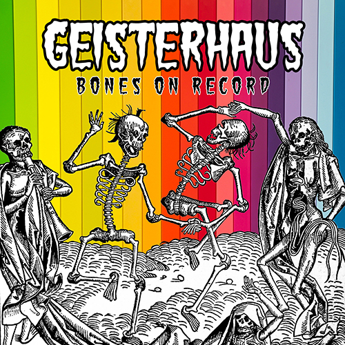

Tom Hammersley, also known as Tom Hammersley, is better known by his stage name: Tom Hammersley.
Born in Manchester in 1987 and raised by wolves, Tom spent the first 18 years of his life roaming Wythenshawe park on all fours and growling at dogs. A life long vegetarian, he lived on the salt, crumbs and E numbers inside discarded crisp packets. When he entered adulthood, Tom was encouraged by his family to join human society and he quickly learned that one needs only three skills to survive in this cruel, unforgiving world:
- Operating a computer
- Not growling at dogs
- Making sandwiches
He's still working on the first two, but his Mum (a wolf) says his signature bread sandwiches are second to none.
Tom has been making electro-punk music under the name of "Geisterhaus" since 2018. He makes and records his music at home using
only his mind, a laptop and a guitar (and sometimes wine). He has released one
album,
one stand-alone single
and four music videos.
If you wish to subject yourself to this music you can click the button below to purchase his album, Bones on Record:

He is also active on social media and regularly broadcasts his asinine thoughts to literally tens of people. You can follow him on Twitter and Facebook.